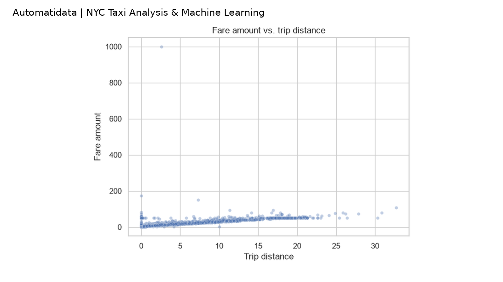
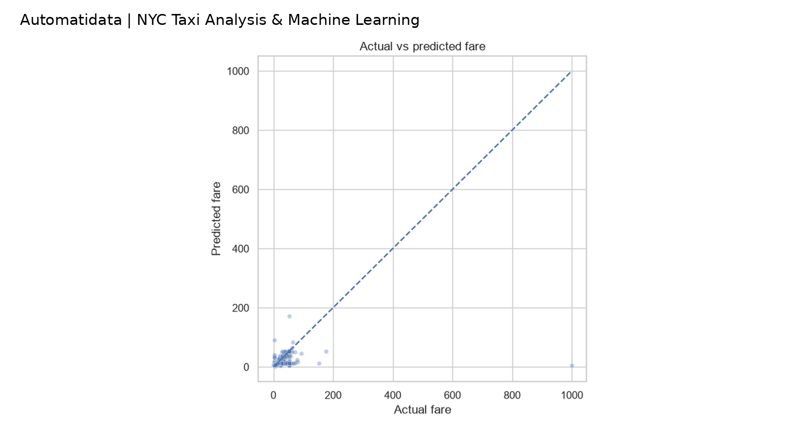
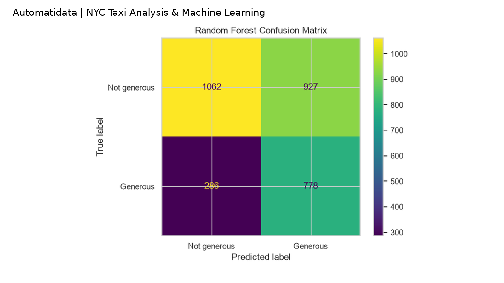

03 · Taxi analytics case study
Automatidata
NYC taxi analytics covering payment-method differences, fare estimation, and generous-tipping classification.

22,699trip records
$1.22card vs cash mean gap
0.182test R²
0.645tip ROC AUC
01 · Analysis
Payment method was associated with average fare.
The workflow combined data-quality checks, trip-level EDA, statistical testing, leakage-aware feature engineering, cross-validated model selection, held-out evaluation, and error analysis. The payment comparison is observational, not a causal pricing rule.
Key findingThe card and cash groups showed a measurable average fare difference, while fare prediction remained difficult enough that errors should be treated as an operational signal rather than an exact estimate.



02 · Model strategy
How the analysis turned into a usable model.
Model choice was tied to the question, the available data, and the evaluation metric. The result is presented with its trade-offs instead of treating one score as the whole story.
Gradient BoostingR² 0.1820 · MAE $3.55 · RMSE $16.41
Random Forest60.27% accuracy · 45.63% precision · 73.12% recall · 56.19% F1
Welch test$1.22 mean fare gap · 95% CI $0.869 to $1.563
03 · Final conclusionProblemTaxi data contains useful patterns, but raw averages can hide differences between payment methods and trip conditions. Recommended actionUse the analysis to investigate fare behavior and flag high-error or high-fare cases for further review. Important noteTreat the payment gap as an association. Do not turn it into a causal pricing rule without stronger evidence.
What a client could actually use from this work.
The useful outcome is not a perfect fare predictor. It is a clearer view of fare drivers, payment-method differences, and where prediction errors become important.
04 · Recommendations & notes
What I would do next.
Recommended next steps
- Use the analysis to investigate fare behavior and flag high-error or high-fare cases for further review.
- Validate the recommendation with fresh data and a clear business success metric.
Important note
The dataset is educational. Route-level aggregate features and model assumptions would need careful leakage controls and fresh validation before production use.